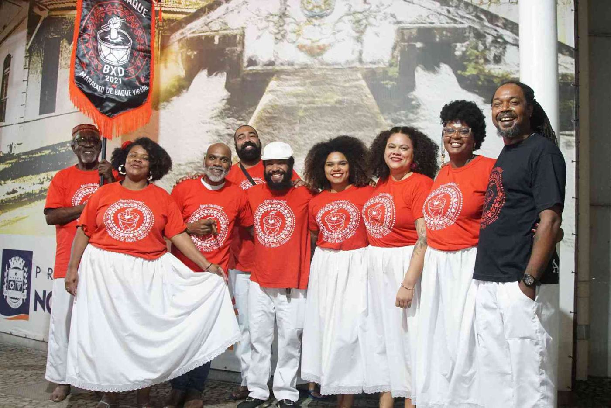

Ciclo de oficinas e consolidação do coletivo.
Maracatu de Baque Virado • LUBESNI
Maracatu Aquilombaque
Percussão, formação e ocupação cultural das ruas a partir de Nova Iguaçu.
História
História
O Grupo Percussivo Aquilombaque Maracatu de Baque Virado possui ata de fundação formal datada de 12 de maio de 2021.
Em 29 de setembro de 2023, o portfólio registra sua homologação como coletivo artístico da cidade de Nova Iguaçu. Desde então, o acervo documenta oficinas, cortejos e ações culturais.

Memória e presença cultural
Trajetória
Marcos organizados a partir do acervo institucional e das fontes públicas indicadas nesta página.
Homologação como coletivo artístico de Nova Iguaçu.
Continuidade das oficinas formativas.
Arrastão na Via Light e participação no catálogo “A Cor da Cultura Popular”.
Cortejo registrado pela LUBESNI e seleção do projeto “Aquilombaque nas Ruas” no edital municipal Raízes da Cultura Popular.
Rastreabilidade
Referências
As fontes abaixo sustentam a história e a trajetória apresentadas. O status de filiação ativa foi informado pela LUBESNI em agosto de 2026.
Dossiê Aquilombaque
Portfólio LUBESNI — págs. 97–103
Diário Oficial de Nova Iguaçu — resultado 2026
Informação institucional
Cores e rede social oficial estão em atualização pela LUBESNI.
Quando um dado ainda não possui confirmação documental recente, ele é apresentado como informação em atualização pela LUBESNI, sem preenchimento por suposição.